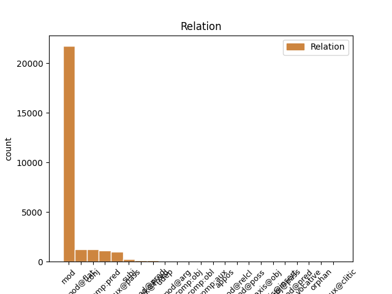
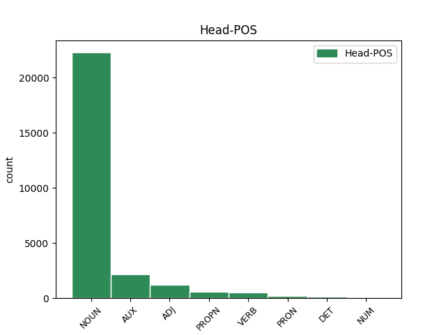
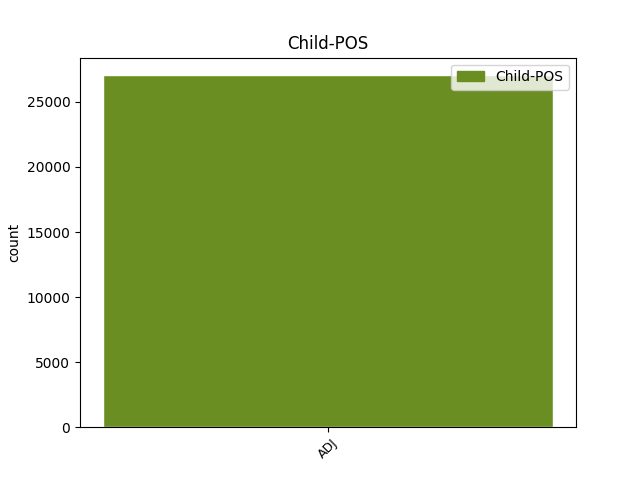

Distribution of features within this leaf



Agreement Rules sorted by frequency.
When the dependent token is None
1 W _ _ _ _ 0 _ _ _
2 przeciwieństwie _ _ _ _ 0 _ _ _
3 do _ _ _ _ 0 _ _ _
4 pozostałej pozostały ADJ adj:sg:gen:f:pos Case=Gen|Degree=Pos|Gender=Fem|Number=Sing 5 mod _ _
5 trójki trójka NOUN subst:sg:gen:f Case=Gen|Gender=Fem|Number=Sing 0 _ _ _
6 zachowywał _ _ _ _ 0 _ _ _
7 się _ _ _ _ 0 _ _ _
8 tak _ _ _ _ 0 _ _ _
9 , _ _ _ _ 0 _ _ _
10 jakby _ _ _ _ 0 _ _ _
11 przygoda _ _ _ _ 0 _ _ _
12 go _ _ _ _ 0 _ _ _
13 cieszyła _ _ _ _ 0 _ _ _
14 . _ _ _ _ 0 _ _ _
Disagree Examples:
1 Łysy _ _ _ _ 0 _ _ _
2 mężczyzna _ _ _ _ 0 _ _ _
3 w _ _ _ _ 0 _ _ _
4 białej _ _ _ _ 0 _ _ _
5 koszuli _ _ _ _ 0 _ _ _
6 i _ _ _ _ 0 _ _ _
7 brązowych brązowy ADJ adj:pl:loc:n:pos Case=Loc|Degree=Pos|Gender=Neut|Number=Plur 8 mod _ _
8 spodenkach spodenki NOUN subst:pl:loc:n:pt Case=Loc|Gender=Neut|Number=Ptan 0 _ _ _
9 gra _ _ _ _ 0 _ _ _
10 na _ _ _ _ 0 _ _ _
11 małej _ _ _ _ 0 _ _ _
12 gitarze _ _ _ _ 0 _ _ _
13 , _ _ _ _ 0 _ _ _
14 stojąc _ _ _ _ 0 _ _ _
15 przed _ _ _ _ 0 _ _ _
16 platformą _ _ _ _ 0 _ _ _
17 ze _ _ _ _ 0 _ _ _
18 sprzętem _ _ _ _ 0 _ _ _
19 muzycznym _ _ _ _ 0 _ _ _
20 . _ _ _ _ 0 _ _ _
1 Mężczyzna _ _ _ _ 0 _ _ _
2 w _ _ _ _ 0 _ _ _
3 czerwonej _ _ _ _ 0 _ _ _
4 kurtce _ _ _ _ 0 _ _ _
5 i _ _ _ _ 0 _ _ _
6 krótkich krótki ADJ adj:pl:loc:n:pos Case=Loc|Degree=Pos|Gender=Neut|Number=Plur 7 mod _ _
7 spodenkach spodenki NOUN subst:pl:loc:n:pt Case=Loc|Gender=Neut|Number=Ptan 0 _ _ _
8 stoi _ _ _ _ 0 _ _ _
9 na _ _ _ _ 0 _ _ _
10 skale _ _ _ _ 0 _ _ _
11 obok _ _ _ _ 0 _ _ _
12 żółtego _ _ _ _ 0 _ _ _
13 kajaka _ _ _ _ 0 _ _ _
14 . _ _ _ _ 0 _ _ _
1 Sześć _ _ _ _ 0 _ _ _
2 dziewczynek _ _ _ _ 0 _ _ _
3 stojących stać ADJ pact:pl:gen:f:imperf:aff Aspect=Imp|Case=Gen|Gender=Fem|Number=Plur|Polarity=Pos|VerbForm=Part|Voice=Act 0 _ _ _
4 jedna jeden ADJ adj:sg:nom:f:pos Case=Nom|Degree=Pos|Gender=Fem|Number=Sing 3 udep _ _
5 obok _ _ _ _ 0 _ _ _
6 drugiej _ _ _ _ 0 _ _ _
7 gra _ _ _ _ 0 _ _ _
8 na _ _ _ _ 0 _ _ _
9 prostych _ _ _ _ 0 _ _ _
10 instrumentach _ _ _ _ 0 _ _ _
11 w _ _ _ _ 0 _ _ _
12 kościele _ _ _ _ 0 _ _ _
13 . _ _ _ _ 0 _ _ _
1 Dziewczyna _ _ _ _ 0 _ _ _
2 w _ _ _ _ 0 _ _ _
3 jasnych jasny ADJ adj:pl:loc:n:pos Case=Loc|Degree=Pos|Gender=Neut|Number=Plur 4 mod _ _
4 spodniach spodnie NOUN subst:pl:loc:n:pt Case=Loc|Gender=Neut|Number=Ptan 0 _ _ _
5 stoi _ _ _ _ 0 _ _ _
6 na _ _ _ _ 0 _ _ _
7 rękach _ _ _ _ 0 _ _ _
8 na _ _ _ _ 0 _ _ _
9 trampolinie _ _ _ _ 0 _ _ _
10 . _ _ _ _ 0 _ _ _
1 Dwie _ _ _ _ 0 _ _ _
2 krowy krowa NOUN subst:pl:nom:f Case=Nom|Gender=Fem|Number=Plur 0 _ _ _
3 , _ _ _ _ 0 _ _ _
4 brązowa brązowy ADJ adj:sg:nom:f:pos Case=Nom|Degree=Pos|Gender=Fem|Number=Sing 2 mod _ _
5 i _ _ _ _ 0 _ _ _
6 czarna _ _ _ _ 0 _ _ _
7 , _ _ _ _ 0 _ _ _
8 biegną _ _ _ _ 0 _ _ _
9 po _ _ _ _ 0 _ _ _
10 trawie _ _ _ _ 0 _ _ _
11 , _ _ _ _ 0 _ _ _
12 mając _ _ _ _ 0 _ _ _
13 za _ _ _ _ 0 _ _ _
14 sobą _ _ _ _ 0 _ _ _
15 psa _ _ _ _ 0 _ _ _
16 i _ _ _ _ 0 _ _ _
17 ogrodzenie _ _ _ _ 0 _ _ _
18 . _ _ _ _ 0 _ _ _